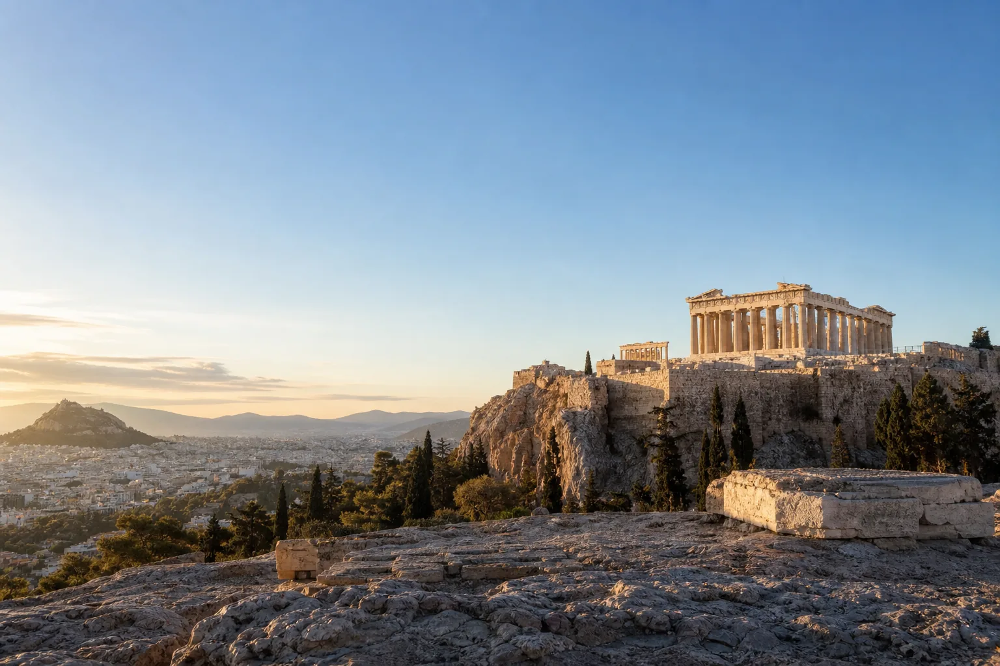
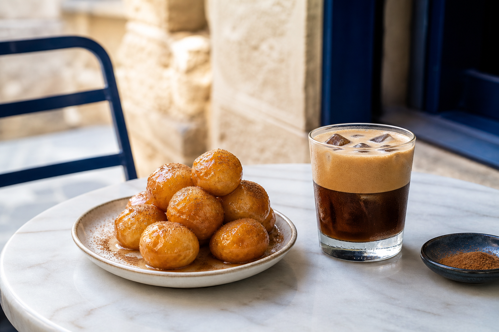

The Parthenon
Architecture, mythology and twenty-five centuries of presence above the modern city.
Open location →
Day 02 Sunday, 11 October 2026 · Athens to Crete
The Acropolis at opening time, Athens by the plate and Piraeus before dark.
The useful trick today is to reach the Acropolis when the gates open and Piraeus long before they close the ferry ramp.
Arrive as the gates open, before the stone heats up and the main paths fill.
Circle the great temple, then pause at the edges for views across Athens toward Lycabettus and the sea.
Follow the story indoors, from the glass-floor excavations to the Parthenon Gallery facing the monument itself.
Trade marble for street life: savoury pies, souvlaki, honeyed loukoumades and an ice-cold espresso freddo.
Return to the apartment, change layers and move only the essentials into a small overnight bag.
Leave generous time for the metro, the correct gate and the traditional port activity of checking the ticket three times.
Walk up the ramp, find the deck and watch the lights of Athens begin to recede.
Tonight, we leave Athens behind and travel overnight to Crete.
Architecture, mythology and twenty-five centuries of presence above the modern city.
Open location →Original sculptures, archaeological finds and a top-floor gallery aligned directly with the Parthenon.
Find the entrance →A private three-berth cabin replaces a hotel room while the ferry covers the distance to Souda.
Find the port →
Order the loukoumades hot, with honey and cinnamon, then add an espresso freddo over ice. It is a practical combination: sugar for the museum miles, coffee for the luggage transfer and enough napkins to identify the best-organised cousin.
Piraeus is large; allow time to locate the correct gate without stress.
Keep ferry confirmations and cabin details downloaded on every phone.
The night voyage
Walk down from the Acropolis to the museum, return through central Athens for food and luggage, then take the metro to Piraeus. The ferry continues overnight to Souda Port.
Open Athens route in Maps →